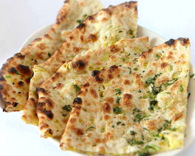

Ingredients
For the Dough
Wheat Flour (Atta) - 2 cups
Salt - 1/2 tsp
Water - as needed to make a soft dough (about 3/4 cup)
Oil - for making parathas
For the filling
Finely Shredded Cauliflower - 4 cups
Ginger garlic paste - 2 tsp
Carom Seeds (Ajwain) - 1/4 tsp
Cumin seeds - 1/4 tsp
Cilantro (finely chopped) - 1/4 cup
Green Chillies (finely chopped) - 2
Tumeric Powder - 1/4 tsp (optional)
Garam Masala - 1 tsp
Amchur Powder - 1/2 tsp
Salt - as needed
Oil - 1 tblsp
Method
To make dough
1. Mix together the flour and salt.
2. Add water little by little and keep kneading to make a soft dough.
3. Add few drops of oil to smooth out the dough.
4. Cover and let the dough rest while we work on the filling. The resting of the
dough makes it more pliable.
To make the filling
1. Finely shred the cauliflower using a food processor or a hand grater.
2. Heat oil in a pan and add the cumin seeds and carom seeds.
3. Add the ginger garlic paste, green chillies and turmeric powder. Fry for
about 30 seconds.
4. Add the shredded cauliflower, required salt, garam masala and amchur powder.
5. Mix everything and cook on medium high flame for just a couple of minutes.
This time is sufficient for the flavours to blend together and the moisture to
evaporate.
6. Finally mix in the chopped cilantro and switch off.
To make the parathas
1. Divide the dough into lemon sized balls.
2. Roll out each ball into a small circle (about 3-4").
3. Put about 2 tblsp of the filling in the center. Pull the egdes of the dough
together around the filling to seal the mixture.
4. Repeat this process with the remaining dough and filling.
5. Next take a stuffed ball and flatten it gently.
6. Dip it in dry flour and roll out gently to make about a 6-7"paratha. I prefer
to keep the sealed side up while rolling.
7. In the meantime, heat a griddle or tawa. Place the rolled out paratha on the
hot tawa.
8. When few bubbles appear, flip the paratha. Apply few drops of oil/ghee on the
top side.
9. Turn again and cook the paratha till brown spots appear on both the sides.
Serve warm.